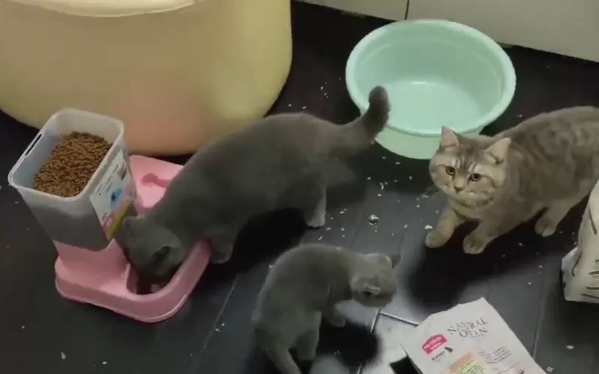
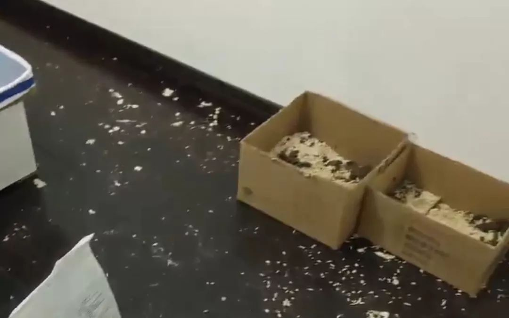
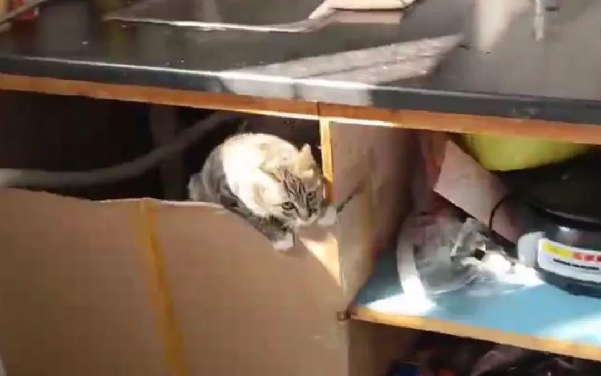

是他们在救助留守武汉的动物
原文链接 备份链接 “不管求助的家庭有多少，都不能让动物绝望地死在自己熟悉的环境里。” 记者 | 陈璐 实习记者 | 赵怡宁 特殊时期的上门援助 1月25日武汉封城的第三天，武汉市小动物保护协会（简称武小协）的会长杜帆在协会群里询问，现在 …

能被救助的宠物是幸运的，有刚出生的小猫崽死在了猫砂盆中，有宠物猫从不慎打开的阳台“跳”了下去……两周的时间里，武汉市小动物保护协会收到了1500条求助信息，它们是另一群等待救援的生命。
全文4816字，阅读约需9.5分钟
“求助！因为‘封城’回不去，我的猫现在困在家里，即将断水断粮，求好心人上门帮忙，需要撬锁。”
“我和家人都要被隔离了，家里两只狗狗求喂，要不狗狗只能等死了。”
……
武汉市小动物保护协会的“上门喂养互助”QQ群里，每天都有几十条这样的求助信息。协会工作人员和其他爱心人士在群中获取相关信息，根据情况上门救助。
从1月26日到2月9日，协会共收到了约1500条求助信息，但这只是“冰山一角”。春节前，很多宠物主人没想到疫情来得如此迅猛，仅预留了几天的粮食。疫情暴发后，他们大多无法及时返回。这些被疫情困住的留守宠物，成了另一群等待救援的生命。
 ▲1月26日，武汉市小动物保护协会公众号发布消息，提供上门救助留守宠物服务。网络截图
▲1月26日，武汉市小动物保护协会公众号发布消息，提供上门救助留守宠物服务。网络截图
━━━━━
意料之外的“重任”
最开始，武汉市小动物保护协会会长杜帆没有想到，他们要担起救助留守宠物的“重任”。
过年前，武汉市小动物保护协会公众号后台就收到了很多留言，希望过年期间协会能提供一些有偿上门喂养服务，但考虑到自身是公益组织，杜帆团队婉拒了这些要求。
1月23日，武汉下达“封城令”。
“封城”消息出来后，协会公众号后台留言就“爆炸”了。杜帆说，好多人留言表示，本来只给家里的猫狗留了两三天的食物，计划早点回来，现在“封城”了就回不来了，家里的宠物面临渴死或饿死的危险。
看到这些留言之后，团队意识到了事态的严重性。“要不要上门救助留守宠物？团队最开始讨论了很长时间。”
起初质疑的声音很大。团队一部分人坚决反对上门救助，觉得风险大，一方面担心上门救助如果被传染，谁都担不起责任；另一方面，如果有志愿者在别人家里偷拿东西，协会还要“背锅”。
但在杜帆和一部分人的坚持下，还是决定要做。“这么特殊的时期，还有这么多顾虑的话，就什么都做不了。作为武汉唯一一家有合法身份的动保组织，这个时候必须站出来。”
于是，在大年初二（1月26日），团队在公众号发布了《猫狗留在武汉的主人们，可以联系我们》的消息，征集留守家中无人照看、健康情况不可控的动物信息，并建立了针对汉口、汉阳和武昌的三个疫情期间应急群。
“消息发出去后没几分钟，三个群就全满员了，我们就意识到这个问题可能没那么简单。”
最开始，协会只有8个人在做相关工作，后来又招募了60个人。“现在有68个人在做这件事，主要是整理大家上传的求助信息，然后按紧急顺序挨个跑。”杜帆说。
但实际的求助量远远大于68个人力所能及的范围。
因此杜帆便建立了一个互助QQ群，征集各界志愿者。第一个互助QQ群，几天之后便3000人满员，截至2月10日，第二个互助QQ群也有了近1500名成员。
在互助QQ群中，一半是求助人，另一半则是当地的各种志愿者，包括无偿上门喂养的市民、有偿提供开锁服务的师傅、无偿捐赠猫狗粮的爱心人士等。
就这样，68个协会成员和几千名志愿者便组成了一个“团队”，为留守宠物提供帮助。
除武汉之外，北京、上海、广州、深圳、南京、杭州等地也出现了大量留守宠物无人喂养的状况，各地爱心机构纷纷组建求助救助群，希望在这一危急时刻提供帮助。
“出于对动物的喜爱，希望能在这个特殊的时期尽一份力。”自愿加入“留守宠物互助组”的杭州市民迟先生说。

▲上门救助时，协会成员会全程录像或跟求助人视频连线。受访者供图
━━━━━
“撬锁”“铲屎”“倒上半个月的粮”
上门救助留守宠物实际上并不像听起来那么简单。
据杜帆介绍，若需要通过协会救助，宠物主人需要先填写一个表格，介绍自己的情况，再拿着身份证录一段授权协会上门救助的视频。
拿到求助者以上信息之后，协会会通过优先级别及紧急程度去判断哪个宠物要先去救助，哪个还可以“缓几天”。
拿到主人授权、排好优先级之后，下一个问题来了，很多家庭都不是密码锁或者也未在武汉地区留有备用钥匙，湖北地区快递又停发，那怎么进门呢？
“只能撬锁。”
经求助人同意后，协会成员会联系开锁师傅，共同前往求助人家里。上门施救的同时，团队成员会全程录像，或者跟求助人视频连线，让主人全程看得到。
进了家门之后，协会成员会去检查家中宠物的健康情况，为其清理排泄物、铲猫砂，加满食物和水。
在多个救助拍摄的视频中，记者看到，很多求助人家的猫砂盆已经堆满了排泄物，用各种盆装的粮食与水也都所剩无几。“我们一般会留给宠物半个月的粮食，如果求助人备的粮食不够的话，协会会无偿提供狗粮或者猫粮。”杜帆说。
救助中，人力是一个大问题。
一次援助的“标配”，至少要有开锁师傅和两名协会成员。“两个人以上可以互相监督，出现问题比较好解决。但现在这个特殊时期，愿意出来帮忙的开锁师傅也少之又少。”杜帆说。
即使凑齐了三个人，救助时还要克服“出行难”。
1月23日，武汉市城市公交、地铁暂停运营；1月24日，武汉全市网约出租车停止运营，巡游出租车单双号限行；1月26日，除部分车辆外，武汉中心城区区域机动车禁行。
绝大多数志愿者由于没有车辆，救助范围局限在自己家附近三四公里，靠步行或者骑自行车前往求助人家中。杜帆说，有一位叫叶子的妈妈，为了救助一只困在家中的宠物猫，带着孩子步行了十公里。
协会里的68名成员，每天大概能跑五六十户。但巅峰时期，每天的求助量就高达两三百件。“从初二到现在（2月9日），后台求助的登记量大概1500件，现在解决了约1200件。除了协会内部解决的救助之外，还有大量求助通过互助群直接沟通解决。”
▲被救助的留守宠物猫。受访者供图
━━━━━
“跳楼”的猫
家住武汉市洪山区的冶先生，是互助群的“活跃成员”之一。封城后，冶先生大概救助了十余只留守宠物。“看到群里的求助信息在家附近的话，就会去帮忙。”
让冶先生印象深刻的，是2月8日上午的一次救助。
求助人家有两只猫急需喂食。冶先生到求助人居住的小区后，被保安拦了下来，问询其进小区的目的。告知详情后，保安告诉他，“前几天有一只猫从19楼‘跳’了下来，死了，但一直没人认领。”
听到这个消息，冶先生立刻跟求助人要来了两只猫的照片。保安看了后认定，“跳楼”的猫是求助人饲养的一只布偶猫。
带着“噩耗”，冶先生到了求助人家中。家中一片狼藉，只看到一只猫，阳台的门开着。另一只布偶猫在无人照看的情况下，从阳台的窗户“跳”了出去。
得知自己的猫“跳楼”后，求助人非常自责，后悔没把猫带回家过年。自责、后悔，是很多求助人的心理状态。
武汉市硚口区的小明也是互助群的救助人之一，已经上门救助了五六次。一次救助时喊猫咪名字没应答，找遍房间也没看着猫咪。情急之下，主人同意将床垫床板掀开，发现猫咪藏在其中，还活着。“是不幸中的万幸了。”
能被救助的宠物，是幸运的。
由于断水、断粮或者其他原因，杜帆团队碰到过十几只宠物死在家里的情况。“再拖一段时间，情况可能会更严重。”
1月30日，协会成员上门救助一只怀孕猫妈妈，来到求助者家里时，看到一只加菲猫妈妈正在生产，刚出生的两只小猫崽已经死在了猫砂盆中。
“这是我们第一次遇到死去的小动物，大家都很难过。”最后，协会成员在征求主人同意后将两只死去的小猫崽“处理好”。
除了常见的宠物猫狗，杜帆团队还接受了一些异宠上门喂养的求助，有小香猪、蜥蜴、鸟、金鱼、兔子等。
2月初，协会就救助了一只名叫“屁屁”的小香猪。小香猪在家留守了12天，协会赶到时发现它被关在阳台，食物、水都没了，放粮的盆都被啃烂了。“它见到我们特别兴奋，发出了一声奇特的叫声。”
救援人员把水添满后，小香猪立即把头伸进水中，足足喝了5分钟，“肯定是渴坏了。”
协会内部统计，90%的求助者都是在武汉工作的外地人，一般租房住。“因为回老家过年，就把宠物留在了家里，但是受疫情影响，回不来，也找不到亲戚朋友帮忙。没办法，只能由我们来帮忙。”
▲宠物长期留守，家中一片狼藉。受访者供图
━━━━━
告急的宠物粮
“我们现在最大的困难，即将面临断粮的风险。”杜帆说，协会的宠物粮食都是年前的囤货，这些库存即将告急。
存在断粮风险的不仅是武汉市小动物保护协会，武汉市内十余家救助组织和爱心机构都面临着同样的处境。“宠物基地都建在郊区、农村，但很多地方封了路，物资进不来。”
“我们很多人甚至动用个人关系，找熟人帮忙，也没办法，东西就是运不进来。”
武汉市外的物资也进不来。
杜帆说，武汉市外的爱心人士想捐赠猫粮狗粮，都因为交通等方面的原因，无法实现。亚洲动物基金机构就曾提出帮助协会及当地十多家动保团体筹集猫狗粮，预计捐赠10000斤，但要等到交通恢复才能送达。
2月10日，复工第一天，多家快递公司正式宣布全面复工，但受疫情影响，湖北地区的正常快递运输并没有恢复。
电商平台上多家售卖猫粮狗粮的商家表示，湖北地区暂时无法发货。一家浙江店铺的店主告诉记者，“基本上都发不了湖北，快递都停了。”
在物资告急的情况下，协会和宠物主人开起了脑洞，用各种食材自制猫粮狗粮，将即食面条弄断做成猫砂……他们希望，通过这些临时的应急办法先度过这段时期。
除了告急的物资，另一个让救助人员“头疼”的是，随着各个社区封闭式管理措施的收紧，顺利进入求助人的小区也成了一件难事。
杜帆告诉记者，他们多以“晓之以理动之以情”的方式，与安保人员和社区工作者交涉。“沟通时间有时候会比较长，我们会说清楚受业主委托救助留守宠物，如果宠物死在家中会成为安全隐患，后果可能无法设想。”
通过百般游说，大部分安保人员和社区工作者都会让救援人员进入小区，但也有遇到闭门羹的时候。杜帆希望，能有更多人理解和配合他们的救助工作。
▲面对“不速之客”，有的宠物会显得比较惊慌。受访者供图
━━━━━
被“误伤”的宠物
除了宠物独自留守问题外，疫情下，宠物是否会感染并传播新冠病毒同样成了一个问题。
疫情暴发初期，“宠物会染上新冠病毒”“宠物会传播新冠病毒”……诸如此类的说法开始蔓延。全国不少地方开始出现弃养、“处理”宠物的现象。
杜帆告诉记者，仅仅武汉地区，他们就看到了很多遗弃宠物的情况。
上海嘉定一位市民也表示，近期在家附近经常能看到猫的尸体，“是被摔死的，我看到过五六只了。”
除了宠物主人“不理智”的行为之外，有关部门也“担忧”了起来。
西安大白杨东社区1月30日下发通知称，面对严峻的疫情，即日起本小区禁止私养宠物。凡私养狗、猫等宠物的业主，应顾全大局立即对家中宠物自行处置。如有顶风违犯，一经发现，由未央区公安分局打狗队强制捕杀，并处罚业主。
通知发出后，引发小区居民和部分社会公众不满，社区随后撤除了通告。
1月30日，江苏无锡一房主在尚未被确诊，隔离观察期间，其宠物猫被社区工作人员活埋。社区工作人员称，根据重大突发事件一级响应机制和社区群众强烈要求，把猫给“处理”了。
但事实上，目前尚无证据表明宠物会感染并传播新冠病毒。
李兰娟院士在接受央视采访时曾表示，如果宠物没有接触病人和疑似感染者，宠物本身是健康的，那没有关系。如果宠物跑到外面接触到疫情，或者接触到被感染的人，宠物也要监控起来。
湖北省2月3日召开的第十三场疫情防控例行发布会上，国家卫生健康委员会专家组成员蒋荣猛也表示，目前为止，没有发现宠物感染冠状病毒传播给人，也没有发现病人传染给猫和狗的情况。
针对“宠物是否会传播新型冠状病毒”，世界卫生组织早在1月29日就指出，目前没有证据显示狗猫等宠物会感染新型冠状病毒。
这一问题牵动着很多像杜帆这样从事小动物保护的工作者的心。
“目前没有任何证据表明宠物会感染或者传播病毒，不要因为一些谣言，让更多无辜的小生命受到牵连。”杜帆说。
“希望大家在特殊时期爱护好自己的宠物，不要遗弃自己的宠物，更不能让它们绝望地死在自己熟悉的家中。”
新京报记者 徐美慧 编辑 陈思 校对 赵琳
点击下图进入”全国新型冠状病毒感染肺炎实时地图“

*值班编辑 花木南*


本文部分首发自新京报公号“北京知道”
未经新京报书面授权不得转载使用
欢迎朋友圈分享


原文链接 备份链接 “不管求助的家庭有多少，都不能让动物绝望地死在自己熟悉的环境里。” 记者 | 陈璐 实习记者 | 赵怡宁 特殊时期的上门援助 1月25日武汉封城的第三天，武汉市小动物保护协会（简称武小协）的会长杜帆在协会群里询问，现在 …
原文链接 备份链接 城里的人出不去，城外的人进不来，留汉的宠物面临被饿死的境况。 文 | 许建宝、赵琼、周晓雨、王超 编辑 | 沈小山 武汉封城之后，除了留守的人们，还有数不清的无人照管的宠物。有些饲主早已料到不能及时回来便放生了，让宠 …
原文链接 备份链接 武汉城里留守的宠物们，遭遇了一场猝不及防的粮食危机。它们的主人春节返乡前，只留下了足够春节假期吃喝的食水，而由于疫情和封城，宠物主人不能如期返回武汉，这些独居的宠物们，成了另一群等待救援的生命。这几天，真实故事计划和几 …
原文链接 备份链接 关注并星标消费新声 不错过泛消费任何最新动态 就像一张网，“封城”“封路”以及关于抗疫的种种举措，兜起了“人命关天”的大局，而微小个体的遗漏和掉落往往需要相同处境的人去打捞，他们的命运也互为参照。 作者 | …
原文链接 备份链接 武汉“白衣天使”的跨年夜 2020-01-25 08:12 作者：张家振 来源：中国经营网 本报记者 张家振 武汉报道 1月24日，除夕夜。一段华中科技大学同济医学院附属同济医院一线医护人员的“年夜饭”触动了众多人的 …